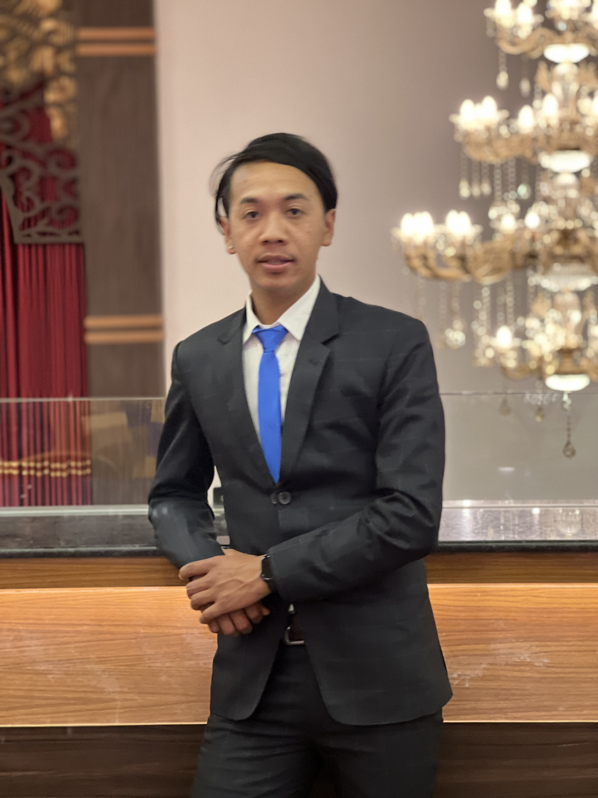

Til Bikram Tamang

Summary
I am a dedicated graduate student in Computer Science with a passion for fostering student
connection and community engagement. Experienced in coordinating events, mentoring
students, and managing administrative tasks, with strong skills in communication, organization,
and data analysis. Eager to support the Office of Community and Belonging’s IMPACT program by
coordinating work-study initiatives, supervising student workers, and developing programs that
address student needs.
Education
Master of Science in Computer Science
The University of Southern Mississippi | Hattiesburg, MS | Expected Graduation: Dec 2026
Bachelor of Technology in Computer Science and Engineering
Jain University | Bengaluru, India | Graduated: November 2023
Work Experience
Junior Chairperson
Blooming Flowers English School | Phidim, Nepal | August 2022 - December 2024
- Managed administrative operations including scheduling events, social media platforms, serving as the
primary source of contact through phone, email and in-person communication
- Introduced IT solutions to automate administrative work to boost the online presence while also assisting
with the setup for computer, printer and network connectivity.
- Delivered interactive Computer science and Mathematics lessons, enhancing a cooperative learning
environment.
Business Coordinator
Gole Stores | Phidim, Nepal | July 2020 – Present
- Managed Marketing, orders, deliveries and bank transactions to improve customer satisfaction and accurate
finance
Skills
- Programming Languages: Python, Java, C, C++, HTML, CSS, JavaScript
- Frameworks: React.js, Node.js
- Database Management: MySQL, MongoDB
- Tools & Technologies: Git, Docker, AWS
- Soft Skills: Communication, Teamwork, Problem-solving, Time Management
Research
Stock Market Prediction Using Genetic Algorithm-Assisted LSTM-CNN Hybrid Model | IEEE Xplore
- Developed an Innovative stock prediction tool which outperformed older methods,
making it an effective way to forecast stock market trends.
- Trained and Tested with the actual stock market data from Apple Inc, which improved
accuracy considerably.
- Published findings in a peer-reviewed journal, showcasing ability to communicate
complex information clearly.
Certifications
- The Fourteenth International Conference on Computing, Communication and
Networking Technology (ICCNT)
- Python for Data Science and Machine Learning Essential Training
- Ethics in the Age of Generative AI
Others
My Hobbies
Contact Me